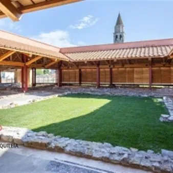

ven 16 ott · dalle 17:30
Cleopatra, il potere e la scena
Cleopatra, il potere e la scena 16 ottobre, ore 17.30 | Domus Tito Macro, Aquileia Note per un’edizione della Cleopatra di Giovanni Dolfin Uno spettacolo divulgativo tra letteratura, arte visiva e danza contemporanea. Una delle protagoniste della letteratura barocca regionale…
 Indicazioni
Indicazioni
- Costi e prenotazioni
- Costo non indicato · Prenotazione non indicata
- Programma
- Programma da verificare. Apri la fonte ufficiale per orari e possibili aggiornamenti.
- In caso di maltempo
- Nessuna indicazione specifica pubblicata.
- Note
- Acquisito automaticamente dalla fonte.
L’EVENTO
Descrizione completa
Un nuovo appuntamento del progetto "Barocco FVG" presso la Domus Tito Macro di Aquileia.
Un evento che unisce ricerca storica, letteratura e arti visive, mettendo in dialogo la letteratura barocca con le urgenze del presente.
L'appuntamento è fissato alle ore 17:30 , ora di inizio dello spettacolo divulgativo che intreccia letteratura del periodo Barocco, arte visiva e danza contemporanea.
Al centro della narrazione emerge la figura di Cleopatra , restituita al pubblico in una versione lontana dagli stereotipi classici grazie a una ricerca sull’opera del Patriarca di Aquileia Giovanni Dolfin (1617-1699), in preparazione alla nuova edizione del volume.
La rappresentazione si sviluppa attraverso suggestive letture e le evocative coreografie della Compagnia Arearea , accompagnate dall’esposizione dei ritratti contemporanei firmati dall’artista Sun Hee Moon .
Oltre a fruire dello spettacolo e delle performance artistiche, il pubblico avrà l'opportunità unica di visitare la Domus di Tito Macro di sera , vivendo un'atmosfera suggestiva tra le vestigia dell'antica domus romana all'interno dell'area archeologica del Fondo Cossar.
Conduce: Tancredi Artico
Divulgatrici: Veronica Baldassa, ricercatrice; Sun Hee Moon Teza, artista
Compagnia di danza: Arearea
Direzione tecnica: PuntoZero
Evento gratuito e aperto a tutte e tutti, su prenotazione
prenotazioni@iodeposito.org
IL PROGRAMMA
Programma e orari
Appuntamenti raccolti dalle fonti elencate. Dove manca un orario, non è ancora disponibile in questa scheda.
Programma pubblicato
- Dal 2026-10-16 al 2026-10-16
INFORMAZIONI UTILI
Prima di partire
- Controllare la fonte prima di partire.
ORGANIZZAZIONE